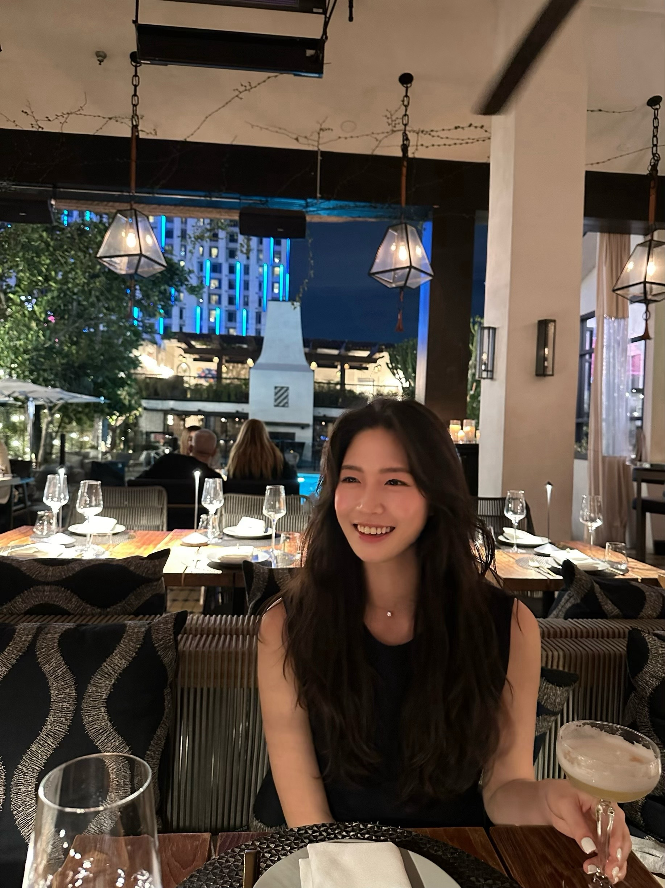

About Me
Born in the vibrant heart of South Korea and having embraced the scenic diversity of Canada from a young age, I am a curious soul with roots stretching across continents. Currently, I am channeling my passion for discovery into my studies, pursuing a major in Information Science with a minor in Data Science at University of Wisconsin-Madison. My academic journey is a testament to my love for exploring the unknown, be it through the lens of technology or the adventures that life offers. Beyond the confines of lecture halls, I find joy in wandering to new destinations, delving into the narratives of compelling movies, and engaging in diverse hobbies. Each place I visit, movie I watch, and hobby I explore enriches my perspective, fueling my journey of continuous learning and growth. Join me as I share my favorite destinations, cinematic masterpieces, and pastimes that spark joy in my heart, hoping to inspire and connect with fellow explorers along the way.
My Interests
- Traveling to exciting places
- Watching inspirational movies
- Engaging in hobbies outside of schoolwork